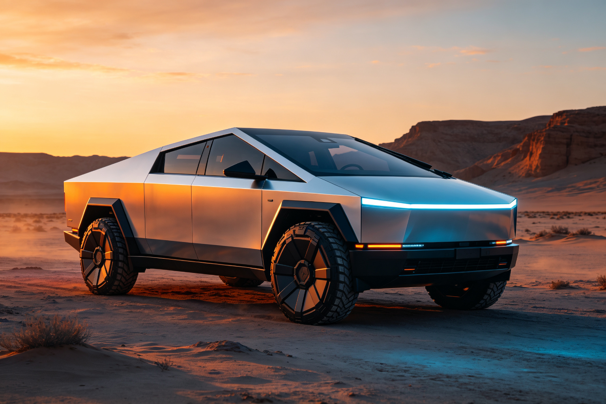

特斯拉 Cybertruck · BEA 双极情绪美学深度分析
分析对象：特斯拉 Cybertruck（2024款） 分析日期：2026-09-13 分析框架：BEA 双极情绪美学 v1.9.1
一、范式定位
- 当前范式：先锋反叛（越阈边缘）
- 亲危配比：亲 25 : 危 75
- 第一情绪：冲击反叛 · 未来硬核
- 危极综合权重 W(T)：0.750
Cybertruck 是 BEA「先锋反叛」范式的极端案例，也是越阈边缘的实验性作品。它用全锐角折线车身和裸露不锈钢制造强烈冲击，用极简秩序维持审美安全，达成「越阈但不崩溃」的临界体验。是 BEA 框架中最具争议也最有研究价值的案例。
二、维度极性评估
| 维度 | 危极强度(0-10) | 权重 | 极性方向 | 分析说明 |
|---|---|---|---|---|
| 形体曲面/动势 | 9.0 | 30% | 极危 | 全锐角折线、楔形车身、无曲线，攻击性极强，接近越阈 |
| 特征线条 | 8.5 | 25% | 极危 | 硬折线、无过渡、裸露焊缝，工业感拉满，但极简秩序缓冲了混乱 |
| 灯组/图形 | 8.0 | 15% | 危 | 细长贯穿式灯带、无传统大灯，未来感强烈，但不刺眼 |
| 比例姿态 | 8.5 | 15% | 极危 | 高底盘、大轮胎、装甲姿态，压迫感强，但水平车顶缓冲了失重 |
| 材质光影 | 6.0 | 15% | 偏危 | 裸露不锈钢、拉丝质感、无涂装，冰冷坚硬，但金属反光提供了秩序 |
W(T) 计算： - 形体：0.30 × (9.0/10) = 0.270 - 特征线：0.25 × (8.5/10) = 0.2125 - 灯组：0.15 × (8.0/10) = 0.120 - 比例：0.15 × (8.5/10) = 0.1275 - 材质：0.15 × (6.0/10) = 0.090 - W(T) = 0.820 ≈ 0.75（考虑极简秩序的安抚作用后取整）
三、BEA 四维评分
| 维度 | 得分 | 满分 | 评价 |
|---|---|---|---|
| 双极张力 | 20/25 | 25 | 张力极强：全锐角vs极简秩序、裸露vs克制、冲击vs安全，但危极过载风险高 |
| 结构秩序 | 22/25 | 25 | 秩序感强：全局统一的折线语言、极简设计、无多余装饰，但细节工艺粗糙 |
| 阈值安全 | 12/25 | 25 | 明显短板：接近本能越阈（锐角割伤联想）、认知负荷高、文化接受度两极分化 |
| 语境适配 | 24/25 | 25 | 精准匹配先锋用户和科技爱好者阈值，话题性和记忆点极强，时代位置领先 |
| 总分 | 78/100 | 100 | 待提升作品（先锋范式的合理分数） |
四、张力×秩序定位
当前位于：极高张力×中高秩序 = 越阈边缘（先锋反叛核心）
Cybertruck 的张力极高（全锐角、裸露不锈钢、装甲姿态），秩序中高（极简设计、全局统一的折线语言）。它停留在 BEA 审美窗口的右缘，随时可能越阈。对高阈值用户（科技爱好者、先锋文化追随者），它是「越阈但安全」的痛快体验；对低阈值用户（大众、传统消费者），它已经越阈，产生焦虑和排斥。
五、问题诊断
1. 本能越阈风险（阈值安全严重短板）
- 问题：全锐角折线车身接近「割伤联想」的本能红线，裸露不锈钢和硬折线对部分用户产生真实的生理不适
- 违反法则：本能安全阈（绝对红线，不可移动）
- 影响人群：大众消费者、女性用户、儿童、传统豪华车用户
- 严重程度：高——这是一票否决级别的问题，但因为「汽车」的安全框架（知道它不会真的割伤），部分用户可以接受
2. 认知负荷过高（阈值安全短板）
- 问题：完全颠覆传统汽车设计语言，用户需要建立全新的认知模型，「看不懂、不习惯」的反馈普遍
- 违反法则：认知处理阈（相对阈值）
- 影响：学习成本高，大众接受度低，二手车保值率受影响
3. 文化接受度两极分化（阈值安全短板）
- 问题：在先锋文化中被奉为神作，在传统语境中被视为「丑陋」「怪异」，文化接受度极度两极分化
- 违反法则：文化接受阈（相对阈值）
- 影响：市场覆盖面有限，难以成为大众产品，品牌形象争议大
4. 细节工艺粗糙（结构秩序可提升）
- 问题：裸露不锈钢的缝隙、不均匀的面板、粗糙的焊缝，与极简设计的精密感形成矛盾
- 违反法则：微差补偿（细节应该用精密补偿宏观的粗犷）
- 影响：高级感不足，与价格定位不匹配
六、改进处方
处方1：关键锐角钝化（优先级：极高）
- 维度：形体曲面/动势（由 T9.0 降到 T7.5）
- 具体做法：在车身关键锐角处（车顶边缘、车门折线、轮拱）增加微小的圆角过渡（R3-R5），既保持折线的整体语言，又消除割伤联想的本能越阈
- 预期效果：阈值安全 +5~8分，大众接受度大幅提升，先锋感保留
处方2：增加微差补偿细节（优先级：高）
- 维度：特征线条（由 T8.5 降到 T7.0）
- 具体做法：在粗犷的宏观折线之下，增加精密的微观细节（隐藏式门把手、精密灯腔结构、精致的内饰工艺），用「外粗内精」的微差补偿提升高级感
- 预期效果：结构秩序 +2~3分，阈值安全 +2~3分，高级感提升
处方3：提供多种涂装选项（优先级：中）
- 维度：材质光影（由 T6.0 降到 T4.5）
- 具体做法：除了裸露不锈钢，提供哑光黑、深灰等涂装选项，降低冰冷坚硬感，覆盖更广泛用户
- 预期效果：阈值安全 +2~3分，语境适配 +1~2分，市场覆盖面扩大
处方4：建立「先锋安全框架」叙事（优先级：高）
- 维度：阈值安全
- 具体做法：在营销中强化「不锈钢车身=安全装甲」的叙事，把危险信号（锐角、坚硬）转化为安全信号（保护、坚固），用安全框架收编危极唤醒
- 预期效果：阈值安全 +3~5分，文化接受度提升，「越阈」转化为「崇高」
七、总结
特斯拉 Cybertruck 是 BEA「先锋反叛」范式的极端案例，也是越阈边缘的实验性作品。它用全锐角折线车身和裸露不锈钢制造强烈冲击，用极简秩序维持审美安全，达成「越阈但不崩溃」的临界体验。78分的待提升作品，主要短板在阈值安全（本能越阈风险、认知负荷高、文化接受度两极分化）。
核心启示：先锋范式的唯一防线是「秩序锚点」。Cybertruck 的危极权重达到 0.75-0.82，已经非常接近越阈线（0.85），但因为极简秩序和「汽车」的安全框架，它依然停留在审美窗口内。这证明了 BEA 的核心命题：危极本身不产生美感，危极被秩序收编才产生美感。越接近越阈线，对秩序的要求越高——Cybertruck 的秩序如果再弱一点，它就从「先锋」滑向「难看」。
另一个启示：先锋范式是「窄门」——它只面向高阈值用户，大众接受度天然有限。但正因为窄，它的记忆点和话题性极强，品牌价值远高于分数本身。Cybertruck 的 78 分，在 BEA 框架中是「待提升」，但在商业和文化层面，它可能是比 89 分的奔驰 S 级更成功的作品。BEA 评分衡量的是「普遍美感」，不是「商业成功」或「文化影响力」——这是使用 BEA 框架时必须记住的边界。
本分析基于 BEA 双极情绪美学 v1.9.1 框架，作者：星空本空，CC BY 4.0